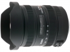

器材库 > 35mm画幅AF变焦镜头 > DG 12-24/4.5-5.6 II HSM

详细规格
镜头类型
广角变焦镜头
发布日期
2011-02-08
焦距
12mm-24mm
最大光圈
f/4.5-5.6
最小光圈
f/22
视角（对角）
122.00-84.10
镜头结构
17片/13组
非球面镜片
3组玻璃模铸非球面镜片, 1组复合非球面镜片
低/超低色散镜片
4片FLD萤石级极低色散镜片, 1片超低色散镜片
光圈叶片
6片
最近对焦距离
28cm
最大放大倍率
0.141倍
驱动马达
HSM（超声波马达）
镜头卡口
Canon EF, Minolta/Konica-Minolta/Sony AF, Nikon AF, Sigma SA
防抖
否
颜色
黑色
尺寸
85×120.2mm
重量
670g
附件
固定花瓣型专用遮光罩
备注
滤镜后置, 防水（溅水）设计
jeshe2013-12-27 13:234.67 分
操作性 5.00耐用性 5.00性价比 5.00解像力 3.50色彩还原 4.50机械结构 5.00
hushengy2013-12-12 08:484.67 分
操作性 5.00耐用性 5.00性价比 5.00解像力 4.50色彩还原 4.00机械结构 4.50
30d40d50d2013-11-12 01:025 分
操作性 5.00耐用性 5.00性价比 5.00解像力 5.00色彩还原 5.00机械结构 5.00
30d40d50d2013-11-12 00:56
undead8152013-05-28 14:434.42 分
操作性 5.00耐用性 4.50性价比 5.00解像力 3.50色彩还原 4.00机械结构 4.50
happydays2013-05-09 18:033.92 分
操作性 4.00耐用性 4.00性价比 4.50解像力 3.50色彩还原 3.50机械结构 4.00
happydays2013-05-09 18:00
酷鱼72002012-11-26 11:264.58 分
操作性 4.50耐用性 4.50性价比 5.00解像力 4.00色彩还原 5.00机械结构 4.50
北方郎2012-11-03 09:364.58 分
操作性 4.50耐用性 4.50性价比 5.00解像力 4.50色彩还原 4.50机械结构 4.50
落伍的候鸟2012-03-14 22:213.92 分
操作性 4.50耐用性 3.50性价比 5.00解像力 3.00色彩还原 3.00机械结构 4.50
楚留光2012-02-20 22:134.08 分
操作性 4.00耐用性 4.00性价比 4.50解像力 4.00色彩还原 4.00机械结构 4.00
九微星2011-11-03 08:514.75 分
操作性 5.00耐用性 4.50性价比 5.00解像力 5.00色彩还原 4.50机械结构 4.50
enzo12022011-09-27 13:174.67 分
操作性 5.00耐用性 4.50性价比 4.50解像力 4.50色彩还原 4.50机械结构 5.00
enzo12022011-09-27 12:04
時光日誌2011-08-08 19:284.5 分
操作性 5.00耐用性 4.00性价比 5.00解像力 4.50色彩还原 4.00机械结构 4.50
产品图 / 样片
适马 DG 12-24/4.5-5.6 II HSM
评测 / 相关文章
该产品暂无存档的评测文章
相关文章
- ［资讯］适马DG 12-24/4.5-5.6 II新卡口版本即将上市 （原站已下线）
- ［试用］容纳一切的力量 适马12-24mm II代试镜 （原站已下线）
- ［资讯］适马在CP+上展出多款相机和镜头新品 （存档）
- ［资讯］适马DG 12-24/4.5-5.6 II HSM （原站已下线）
- ［资讯］适马发布三款镜头 （存档）